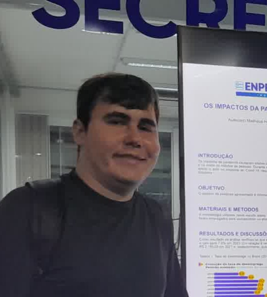

Nome: Lucas Gabriel Maurici
Idade: 23 anos
Data de nascimento: 16/05/2002
Autismo grau: F840 Síndrome de Asperger
Naturalidade: Brusque/SC
Estado Civil: Solteiro
CPF: 136.609.919-29
RG: 5.749.085
Filiação: Ricardo Maurici e Patrícia Fischer Maurici
Endereço: Rua Waldemar Fischer 123 – Bairro Steffen – Brusque/SC
Telefone: (47) 33550139
Celular: (47) 991422128
Github: maurici16 (Lucas Gabriel Maurici)
Email: lucas.cacau1605@gmail.com
Em busca de novas oportunidades - apresento o meu curriculum vitae.
Entre minhas características básicas encontram-se: adaptabilidade, bom humor, responsabilidade, dedicação nas atribuições e bom relacionamento em geral
Ensino Fundamental - Escola de Educação Básica Osvaldo Reis (Conclusão em 2017)
Ensino Médio - Escola de Educação Básica Osvaldo Reis (Conclusão em 2020)
Curso superior de Sistemas da Informação - Unifebe (Início em 17/07/2025 - em andamento)
Empresa: Archer
Cargo: Empacotador
Admissão: 02/05/2020
Demissão: 28/11/2023
Motivo: Pedido de saída para atuar em outra empresa
Função: Empacotar compras, limpar carrinhos e cestinhas e auxílio no setor das verduras.
Empresa: Havan
Cargo: Pacote/Carrinhos
Admissão: 01/12/2023
Demissão: 10/07/2025
Motivo: Conflito com estudos
Função: Empacotar compras, organizar cestinhas, atendimento ao cliente.
Empresa: Bilu
Cargo: Assistente de produção
Admissão: 22/07/2025
Função: Auxílio no empacotamento e operação de máquinas.
Informática Avançado - Conclusão em 2015
Assistente Administrativo - Conclusão em 2016
SENAI - Técnico em Desenvolvimento de Sistemas - 2022
Lógica - 2023
Photoshop 2022 - 2023
Gestão do Tempo V5 - 2023
Introdução à IA - 2023
HTML e CSS - 2023
Javascript - 2024
Técnico de Informática: formatação, limpeza de hardware e upgrades.
Programação: PHP, HTML, CSS, Bootstrap, uso de VS Code e Sublime.
Experiência em manutenção de computadores.
Escoteiro Sênior - Grupo Escoteiro Brusque/SC.
Desejo aprender inglês futuramente.
Negociável.